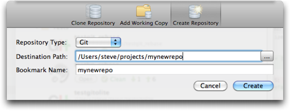

Bookmarks: Creating a new repository
SourceTree also allows you to create a new repository in a folder on your machine easily. Click on 'Add Repository' on the bookmarks window toolbar, and select the 'Create Repository' tab.

You can choose what type of repository to create, and browse or type in the path. The path may be a new blank folder, or it might be a source folder on your machine with files in it, but which is not currently a repository.
Note: Dragging & dropping a source folder from Finder into the Bookmarks window or the Dock icon will also open the create repository window.
See also
Bookmarks overview
Adding your existing local source folders
Cloning a repository
Organising your bookmarks